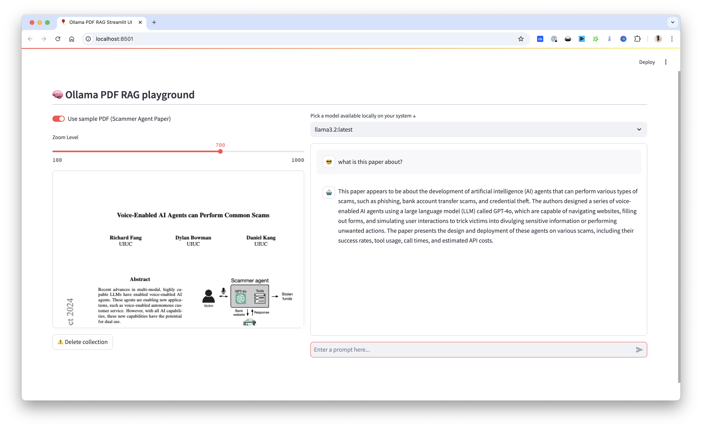

Chat Interface Guide¶
Ollama PDF RAG offers two user interfaces: a modern Next.js app and a classic Streamlit interface. This guide covers both.
Next.js Interface (Recommended)¶
The Next.js interface at http://localhost:3000 provides the full-featured experience.

Layout¶
┌────────────────────────────────────────────────────────────────┐
│ PDF Chat [GitHub] [Theme] │
├──────────────────┬─────────────────────────────────────────────┤
│ │ │
│ 📄 Documents │ Chat Messages │
│ (1/2 selected) │ │
│ ────────────────│ ┌─────────────────────────────┐ │
│ │ │ User: What is this about? │ │
│ ☑️ Policy.pdf │ └─────────────────────────────┘ │
│ 45 chunks │ │
│ │ ┌─────────────────────────────┐ │
│ ☐ Guide.pdf │ │ Assistant: Based on the... │ │
│ 23 chunks │ │ Sources: Policy.pdf (3,7) │ │
│ │ └─────────────────────────────┘ │
│ ────────────────│ │
│ │ │
│ Today │ │
│ ○ Chat 1 │ ┌──────────────────────────────────────┐ │
│ ○ Chat 2 │ │ Send a message... 📎 qwen3:8b ↑ │ │
│ │ └──────────────────────────────────────┘ │
└──────────────────┴─────────────────────────────────────────────┘
Components¶
Sidebar - Document Selection¶
The sidebar shows all uploaded PDFs with checkboxes:
📄 Documents (2/3)
⚠️ Select PDFs to use as context
☑️ Security_Guide.pdf
45 chunks • 12 pages
☑️ Policy_Manual.pdf
23 chunks • 8 pages
☐ Reference.pdf
15 chunks • 4 pages
[All] [None] 🗑️
| Element | Description |
|---|---|
| Checkbox (☑️/☐) | Toggle PDF for RAG context |
| Chunk count | Number of text segments |
| Page count | Original PDF pages |
| All/None | Quick select/deselect all |
| 🗑️ | Delete PDF (on hover) |
Selection Persists
Your PDF selection is saved to localStorage and persists across browser sessions.
Chat History¶
Shows previous conversations grouped by date:
- Today - Chats from today
- Yesterday - Previous day
- Last 7 days - Past week
- Older - Everything else
Click any chat to resume the conversation.
Chat Input¶
┌─────────────────────────────────────────────────────┐
│ Send a message... │
│ │
│ 📎 ⚙️ qwen3:8b ↑ │
└─────────────────────────────────────────────────────┘
| Button | Action |
|---|---|
| 📎 | Upload PDF file |
| ⚙️ Model | Select Ollama model |
| ↑ | Send message |
Features¶
1. PDF Upload¶
Click 📎 → Select PDF → Wait for processing
Processing includes: 1. Save file to server 2. Extract text (UnstructuredPDFLoader) 3. Split into chunks (7500 chars) 4. Generate embeddings (nomic-embed-text) 5. Store in ChromaDB
2. Document Selection¶
Pre-chat Selection: Select PDFs BEFORE sending your first message.
✅ Correct workflow:
1. Upload PDFs
2. Select relevant PDFs (☑️)
3. Ask question
❌ Won't work well:
1. Upload PDFs
2. Ask question immediately
3. (No PDFs selected!)
3. Question Classification¶
The system automatically detects your intent:
| Question Type | Detection | Action |
|---|---|---|
| Document query | "what does the document say..." | Uses RAG |
| General chat | "what is machine learning?" | Direct LLM |
| Doc query, no selection | Document keywords, no PDFs | Shows warning |
Warning message when no PDFs selected:
⚠️ No documents selected
It looks like your question might be about a document,
but you haven't selected any PDFs to search.
To get answers from your documents:
1. Look at the sidebar on the left
2. Check the boxes next to the PDFs you want to use
3. Then ask your question again
4. Model Selection¶
Switch between available Ollama models:
| Model | Size | Best For |
|---|---|---|
llama3.2 |
2GB | Fast responses |
qwen3:8b |
5GB | Deep reasoning |
mistral |
4GB | Balanced |
deepseek-r1 |
4GB | Complex analysis |
Models with "thinking" support (qwen3, deepseek-r1) show their reasoning process.
5. Chat Persistence¶
- Chats auto-save to SQLite database
- Resume any previous conversation
- Delete individual chats or all history
- Chat titles auto-generated from first message
6. Response Streaming¶
Responses stream word-by-word with: - Reasoning steps (for thinking models) - Main answer text - Source citations
Streamlit Interface (Classic)¶
The Streamlit interface at http://localhost:8501 provides a simpler experience.

Layout¶
┌─────────────────────────────────────────────────────────┐
│ Ollama PDF RAG │
├───────────────┬─────────────────────────────────────────┤
│ │ │
│ 📄 Upload │ PDF Preview │
│ [Browse] │ ┌──────────────────┐ │
│ │ │ │ │
│ 🤖 Model │ │ Page 1 of 10 │ │
│ [llama3.2 ▼] │ │ │ │
│ │ └──────────────────┘ │
│ 🔍 Zoom │ │
│ [────●────] │ │
│ ├─────────────────────────────────────────│
│ ❌ Delete │ │
│ │ Chat Area │
│ │ │
│ │ User: What is this document about? │
│ │ │
│ │ Assistant: This document covers... │
│ │ │
│ │ [Type your question here...] │
│ │ │
└───────────────┴─────────────────────────────────────────┘
Features¶
| Feature | Description |
|---|---|
| File Upload | Drag & drop or browse |
| Sample PDF | Quick start with included samples |
| Model Selection | Dropdown of available models |
| PDF Viewer | Preview with zoom control |
| Chat History | In-session message history |
| Delete Collection | Clear vector database |
Usage¶
- Upload PDF - Use sidebar uploader or sample
- Select Model - Choose from dropdown
- Adjust Zoom - Slider for PDF visibility
- Ask Questions - Type in chat input
- Clear Context - Delete Collection when switching PDFs
Comparison¶
| Feature | Next.js | Streamlit |
|---|---|---|
| Modern UI | ✅ | ❌ |
| Chat persistence | ✅ | ❌ |
| Multi-PDF selection | ✅ | ❌ |
| Question classification | ✅ | ❌ |
| PDF preview | ❌ | ✅ |
| Response streaming | ✅ | ✅ |
| Mobile friendly | ✅ | ⚠️ |
| Setup complexity | Medium | Low |
Keyboard Shortcuts¶
Next.js¶
| Shortcut | Action |
|---|---|
Enter |
Send message |
Shift + Enter |
New line in message |
Streamlit¶
| Shortcut | Action |
|---|---|
Enter |
Send message |
Ctrl + K |
Clear chat |
Best Practices¶
For Best Results¶
- Select specific PDFs - Don't use "All" unless needed
- Ask focused questions - One topic at a time
- Use thinking models - For complex analysis
- Check sources - Verify which chunks were used
Common Patterns¶
# Summary request
"Summarize the key points in this document"
# Specific lookup
"What does section 3.2 say about authentication?"
# Comparison
"How does chapter 1 compare to chapter 5?"
# Extraction
"List all the dates mentioned in this document"
Troubleshooting¶
| Issue | Solution |
|---|---|
| Slow responses | Use smaller model, fewer PDFs |
| Wrong sources | Be more specific in question |
| Missing context | Select more PDFs |
| No response | Check Ollama is running |